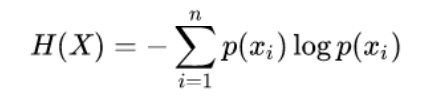
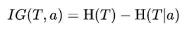
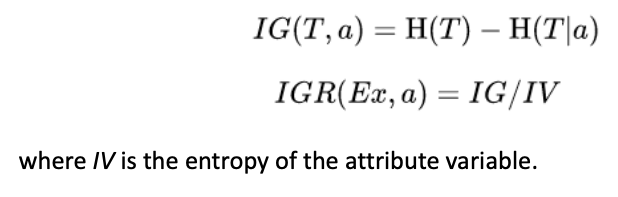
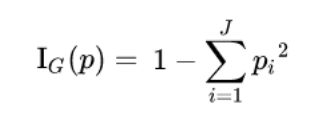

Lesson 02 - Supervised Machine Learning - Decision Trees#
Summary#
Decision Tree Learning: “Method for approximating discrete-valued target functions, in which the learned function is represented by a decision tree.” Mitchell T.(1997)
Appropriate Problems for Decision Tree Learning:
Instances are represented by attribute-value pairs
The target function has discrete output values
Disjunctive descriptions may be required
The training data may contain errors
The training data may contain missing attribute values
Constructing Decision Trees#
ID3 Algorithm (Quinlan 1983):
The first inductive method for constructing decision trees
Top-down
At each level, answers the question: “which attribute should be tested to better discriminate the class?”
Greedy search for an acceptable decision tree
Never backtracks to reconsider earlier choices
Because of subtle interaction between the heuristic attribute selection and particular found examples, it is difficult to characterize precisely the inductive bias exhibited by ID3
However, we can approximately define it as a preference for short decision trees over complex ones.
Trees that place high information gain attributes close to the root are preferred over those that do not
Selecting the best attribute:
Entropy: measures the impurity of a collection of examples for all n classes
Information gain: n measures the expected reduction in entropy
Possible problems:
What if we use Date as predictor? There are so many possible values that we are bound to split into many small subsets, yielding high information gains. However, this does not translate into better predictors.
C4.5 (Quinlan 1993):
Information gain ratio penalizes attributes by incorporating a term, called split information or intrinsic value, that is sensitive to how broadly and uniformly the attribute splits the data.
C4.5 (and later C5.0) improved ID3 by:
Handling heterogeneous attributes
Handling missing values
Handling costs
Pruning trees after creation
Boosting
CART (Breiman et al. 1984):
ClAssification Regression Trees
Gini impurity is a measure of how often a randomly chosen element from the set would be incorrectly labelled if it was randomly labelled according to the distribution of labels in the subset.
Variance reduction is a broader estimate, also introduced in CART, for continuous target variables.
The one which is implemented by default in
rpartand the most basic available for use.
Random Forests (Breiman 2001)
To avoid the heuristic decisions and reduce inductive bias of decision trees, random forests have been proposed.
The idea is to combine the bagging approach (proposed by Breiman and better discussed in next classes) and random selection of features:
Multiple bootstrapped samples are taken from the original data set.
A decision tree with randomly selected features is learned from each sample.
Final classification of the random forest is usually done by majority vote of the ensemble.
NOTES:
Entropy: 
Information gain: 
Information gain ratio: 
Gini Impurity: 